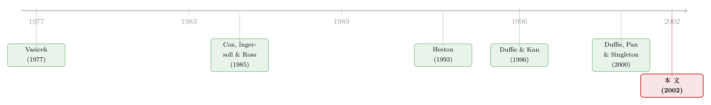

解完债券价格，期权定价就只剩「换几个常数」的事
本文读的是 Chacko & Das (2002, Review of Financial Studies)：他们指出，一旦你的利率模型属于「指数仿射」类、能写出闭式的债券价格，那么一大批利率衍生品的定价公式，几乎可以「照着债券解抄下来」——因为期权价格所满足的方程组，和债券价格的方程组只差几个常数项。无论模型里塞进多少个因子、多少个布朗运动、多少个跳跃过程，最终的计算都收缩到至多两个一维数值积分。
1 引言：模型越做越漂亮，可它们究竟是为了什么
过去三十年，利率模型这条线走得风生水起。
从最早的单因子扩散模型——Vasicek (1977)、Cox, Ingersoll, and Ross (1985)——人们很快意识到，一根短端利率不足以刻画整条收益率曲线的形状。于是有了多因子模型：Brennan and Schwartz (1977)、Longstaff and Schwartz (1992)、Duffie and Singleton (1997)、Balduzzi, Das, and Foresi (1998) 把「中枢水平」「随机波动率」「随机中心趋势」一个个请进了状态变量。再后来，实证又发现利率会「跳」——Ahn and Thompson (1988)、Das and Foresi (1996)、Duffie, Pan, and Singleton (2000) 把跳跃-扩散 (jump-diffusion) 也装了进来。
模型越来越逼真，能匹配的短端利率动态也越来越细。可是 Chacko 和 Das 在文章一开头就点了一句很扎心的话：人们费这么大劲给短端利率建模，本来的主要目的，就是为了给固定收益衍生品定价——而恰恰是衍生品定价这一头，反而掉了队（"has lagged behind"）。
为什么会掉队？因为每当你换一个更花哨的短端利率过程，理论上就得从头为它推导一遍期权公式。状态变量多一个、跳跃多一种，PDE 就多一维，闭式解往往求不出来，只能上高维数值积分或蒙特卡洛。结果就是：研究者和从业者在「选一个好的利率过程」与「能不能算得动期权」之间反复权衡，常常为了后者牺牲前者。
于是一个自然的问题摆在面前：有没有可能，一旦债券价格解出来了，期权价格就「免费」跟着来了？
这篇文章给出的答案，几乎就是「是」。
2 一个被忽略的「巧合」：债券和期权，解的是同一组方程
先把舞台搭起来。
故事的基准，是 Duffie and Kan (1996) 那篇里程碑式的工作。他们证明了一件事：如果利率和因子的随机过程是仿射的 (affine)——通俗讲，就是漂移项、扩散项的平方、以及跳跃的矩母函数，都是状态变量的线性函数——那么零息债券的价格一定是指数仿射 (exponential affine) 形式：
$$P(\tau) = \exp\!\left[A(\tau)\,r_t + \sum_{i=1}^{m} B_i(\tau)\,x_{i,t} + C(\tau)\right]$$
这里 \(\tau\) 是到期期限，\(r_t\) 是短端利率，\(x_{i,t}\) 是 \(m\) 个因子。而那些载荷函数 \(A(\tau)\)、\(B_i(\tau)\)、\(C(\tau)\)，并不是凭空给的——它们各自满足一条里卡蒂常微分方程 (Riccati ODE)，配上一组边界条件，就唯一确定了。换句话说，「解债券价格」这件事，本质上就是「解一组里卡蒂方程」。
接着，一个自然的问题是：那期权呢？期权价格满足的方程长什么样？
这就是全文的「内核」(kernel)。Chacko 和 Das 发现：不同类型的利率期权所满足的方程组，和债券价格那一组里卡蒂方程几乎一模一样；两者唯一的区别，只在于方程背后的常数项不同。
他们把债券解写成带参数的形式 \(A^*(\Theta;\tau,b,d)\)、\(B_i^*(\Theta;\tau,b,d)\)、\(C^*(\Theta;\tau,b,d)\)——其中 \(\Theta\) 是过程参数，\(b=[a,b_1,\dots,b_m,c]\) 是边界条件里的常数向量，\(d\) 是方程里另一个常数向量。对零息债券，\(b=0\)、\(d=d^*\equiv[-1,0,0]\)；而对各种期权，只要换上另外一组 \(b\) 和 \(d\)，同样这几个函数 \(A^*,B^*,C^*\) 就直接给出了期权定价所需的组件。
于是反转出现了：一旦你把指数仿射的债券模型推导出来，「一大批常见固定收益衍生品的定价公式，可以从债券模型的组件里直接看着写出来」（原文 "written by inspection"）。不必为每个新模型重起炉灶——你已经把活儿干完了，只是当时没意识到。
3 模型：从一般设定到那条可以「照抄」的公式
我们把设定写清楚。经济体是一个连续交易经济，所有计算都在风险中性测度 \(Q\) 下进行。短端利率与因子由如下随机微分方程驱动：
$$dr_t = \mu(r,x)\,dt + \sigma(r,x)\,dW + J_r\,dN$$ $$dx_t = \alpha(x)\,dt + \beta(x)\,dW + J_x\,dN$$
这里 \(W\) 是 \(n\) 维布朗运动向量，\(N\) 是 \(l\) 维相互正交的泊松（跳跃）过程向量，每个泊松过程的强度 \(\lambda_i \ge 0\) 为常数；\(J_r\)、\(J_x\) 是跳跃幅度，且假定跳跃幅度的条件分布与状态变量无关。
要让债券价格落进指数仿射类，需要的限制正是 Duffie-Kan 的那一套：漂移项、每个扩散项的平方，都是 \((r,x)\) 的线性函数；跳跃幅度的矩母函数也是 \((r,x)\) 的线性函数。
任意一个在该经济体里交易的证券，价格 \(P(r,x;\tau)\) 都满足一条偏微分-差分方程 (partial differential difference equation, PDDE)：
$$0 = \mathcal{D}P_t + d\,s\,P_t$$
其中 \(\mathcal{D}\) 是含扩散、漂移、跳跃项的微分算子，\(s=[r_t,x_t,1]\) 是状态行向量，\(d\) 是常数行向量。对真正在市场上交易的证券，\(d=d^*=[-1,0,0]\)；但作者刻意把 \(d\) 先写成任意常数——因为后面给期权变形时，恰恰会用到 \(d\neq d^*\) 的情形。这一笔「先留个口子」，正是整套方法的关键伏笔。
借助 Feynman–Kac 定理，债券价格可以写成熟悉的贴现期望：
$$P(\tau) = E_t\!\left[\exp\!\left(-\int_t^T r_v\,dv\right)\right]$$
而在指数仿射约束下，用分离变量法把 PDDE 拆开，就得到 \(A,B_i,C\) 各自的里卡蒂方程。把零息债券的边界条件 \(b=0\)、\(d=d^*\) 代进通解，债券价格就是：
请盯住这条公式里被标注的三个函数。文章真正的主张（原文 Remark 1）就是一句话：许多利率衍生品的价格，可以完全用同样这几个函数 \(A^*,B^*,C^*\) 来表达——你只需要把括号里的 \((0,d^*)\) 换成别的 \((b,d)\)。债券和期权，共用同一套「积木」。
4 三类支付：把衍生品「按图索骥」
那么，到底哪些衍生品能这样「照抄」？作者给出了三大类支付结构，几乎覆盖了主流的利率衍生品：
- 在短端利率与因子上线性的支付（payoffs linear in the short rate and factors）；
- 在短端利率与因子上指数仿射的支付（exponential affine payoffs）——债券期权、期货期权属于此类；
- 「积分-线性」支付（integro-linear payoffs），即支付是「短端利率/因子的线性组合在一段时间上的积分」——这正好对应平均利率期权 (average interest rate options) 这类亚式 (Asian) 结构。
第三类尤其漂亮。平均利率期权一向是定价里的硬骨头，因为「路径平均」让状态变得高维。作者的处理是一招状态空间扩张 (state-space expansion)：把标准 Black-Scholes/Merton 那种 \(m\) 个状态变量的设定，扩成 \(m+1\) 个，多出来的那一个状态变量，就是标的的算术积分（即均值）本身。如此一来，路径依赖的「平均」被偷偷塞回了马尔可夫框架，仿射结构得以保留。Bakshi and Madan (2000) 后来对这一思路做了张成（spanning）分析。
债券期权、期货期权、利率上下限 (caps and floors)、平均利率期权——文章逐一给出了闭式解。无论你的模型里有几个因子、几种跳跃，标准衍生品的定价至多只需评估两个一维积分。
5 期权定价：又见 Black-Scholes 的那两项结构
到这一步，最关键的一招还没出场。期权支付里有个 \(\max(\cdot,0)\)，这跟债券那种「确定性贴现」不一样，怎么把它也化进同一套仿射组件？
作者的做法是把欧式期权的价格，拆成两项——熟悉这套路的人会立刻想起 Black-Scholes 公式里那两个被 \(N(d_1)\)、\(N(d_2)\) 加权的项。记 \(Z_t = \int_t^T r_v\,dv\)，期权价格
$$F_t(\tau;\hat\tau) = E_t\!\left[e^{-Z_t}\max\!\big(f_T(r,x,\hat\tau)-K,\,0\big)\right]$$
可以分解为
$$F_t(\tau;\hat\tau) = A_{0,t}\,\Pi_1 \;-\; K\,P_t(\tau)\,\Pi_2$$
其中
$$A_{0,t} = E_t\!\left[e^{-Z_t}f_T\right],\qquad P_t(\tau) = E_t\!\left[e^{-Z_t}\right],$$ $$\Pi_1 = \frac{E_t\!\left[e^{-Z_t}f_T\,\mathbf{1}_{\{f_T\ge K\}}\right]}{E_t\!\left[e^{-Z_t}f_T\right]},\qquad \Pi_2 = \frac{E_t\!\left[e^{-Z_t}\,\mathbf{1}_{\{f_T\ge K\}}\right]}{E_t\!\left[e^{-Z_t}\right]}.$$
请注意每一块的业务含义：\(P_t(\tau)\) 就是到期日 \(T\) 的贴现债券价格，\(A_{0,t}\) 是决定支付的那个标的函数的现值，而 \(\Pi_1\)、\(\Pi_2\) 是两个「期权落进价内」的概率（一个是在某种调整测度下的，一个在另一种）。整个公式的骨架，和 Black and Scholes (1973)、Merton (1973) 那对孪生项如出一辙。
而 \(\Pi_1\)、\(\Pi_2\) 怎么算？这里请出全文的第二件工具：Fourier 反演 (Fourier inversion)，正是 Heston (1993) 在随机波动率期权里用的那一招。文章的 Theorem 3 给出：只要密度函数的特征函数（characteristic function）「行为良好」，累积分布函数就能由特征函数经一个一维积分反演出来。而在指数仿射世界里，这些特征函数本身又是指数仿射的——于是它们又回到了那几个 \(A^*,B^*,C^*\) 组件上。一环扣一环，最后所有东西都收敛到「解一次里卡蒂方程 + 做一两个一维积分」。
（关于用数值积分把期权定价「解放」出来这条思路，可参见《把期权定价从「一步一挪」解放出来：QUAD 与积分的胜利》；而用 Fourier 方法处理带跳跃的期权，亦可对照《把「跳跃、波动、杠杆」三件事，交给一只会变速的钟》。）
6 一个跳跃-扩散的例子：把抽象变具体
文章用一个具体的跳跃-扩散模型把整套方法落地，贯穿全文。风险中性下的短端利率为：
$$dr = \kappa(\theta - r)\,dt + \sigma\,dW + J_u\,dN_u(\lambda_u) - J_d\,dN_d(\lambda_d)$$
其中 \(\kappa,\theta,\sigma,\lambda_u,\lambda_d\) 为常数，\(J_u\)、\(J_d\) 是两个均值为正的指数分布随机变量（分别记均值为 \(m_u\)、\(m_d\)），代表向上和向下的跳跃。这个利率既有均值回复带来的持续性，又因双向跳跃而有偏度和超额峰度。它的单跳版本来自 Das and Foresi (1996)，双跳版本则见于 Duffie, Pan, and Singleton (2000)。
对应的 PDDE 是：
$$\tfrac{1}{2}\sigma^2 P_{rr} + \kappa(\theta - r)P_r - P_\tau + \lambda_u E\!\left[P(r+J_u)-P(r)\right] + \lambda_d E\!\left[P(r-J_d)-P(r)\right] = -d\,r\,P$$
在边界条件 \(P(r,\tau{=}0)=\exp[ar+c]\) 下，解的形式是 \(P(r)=\exp[A(\tau)r+C(\tau)]\)，其中 \(A\)、\(C\) 满足
$$\frac{dA}{d\tau} = -\kappa A + d$$ $$\frac{dC}{d\tau} = \tfrac{1}{2}\sigma^2 A^2 + \kappa\theta A + \lambda_u\frac{m_u A}{1 - m_u A} - \lambda_d\frac{m_d A}{1 + m_d A}$$
注意第二条方程里那两个分式，正是指数跳跃的矩母函数 \(E[e^{AJ_u}]=\tfrac{1}{1-m_u A}\) 经过线性化后留下的项——这就是「跳跃的矩母函数在状态变量上线性」这条仿射约束的真身。\(A\) 的解是干净的指数形式：
$$A^*(\tau,b,d) = u_1 e^{-\kappa\tau} + u_2,\qquad u_2 = \frac{d}{\kappa},\qquad u_1 = a - u_2.$$
当 \(b=[0,0]\)、\(d=-1\) 时，这就给出零息债券价格；换上别的 \(b\)、\(d\)，同一个 \(A^*\) 就转身去服务期权。这就是「换几个常数」的字面意思。
作者用一组基准参数（\(\kappa=0.2,\ \theta=0.1,\ \sigma=0.1,\ \lambda_u=\lambda_d=5,\ m_u=m_d=0.005,\ \tau=0.5,\ r=0.1\)）算出贴现债券价格约为 0.9514。更有意思的是表 1 里那个反直觉的小细节：当上下两个方向的跳跃频率从每年 3 次同步升到 6 次时，债券价格不降反升——从 0.951419 微升到 0.951424。 原因是债券价格相对短端利率是凸的 (convexity)：同样幅度的「上跳」对债券价格的压低，小于同样幅度的「下跳」对它的抬升，于是对称地增加跳跃频率，净效应反而把价格往上抬了一点点。一个不起眼的五位小数，背后是固定收益里最经典的凸性直觉。
7 文献脉络
把这条线捋一遍，会看到一个清晰的「先建模、后定价」的接力。
最早是 Black and Scholes (1973) 与 Merton (1973) 奠定的期权定价范式；利率这条专线则由 Vasicek (1977)、Cox, Ingersoll, and Ross (1985) 的单因子均衡模型开启。随后模型不断加料：多因子、随机波动率、跳跃。真正把这一切「收口」的，是 Duffie and Kan (1996)——他们证明了仿射过程与指数仿射期限结构之间的等价，并把载荷函数归结为里卡蒂方程；Dai and Singleton (2000) 进一步刻画并统一了整个仿射类。

与此并行的，是定价技术里的 Fourier 革命：Heston (1993) 用反演法解决了随机波动率期权，此后 Bates (1996)、Bakshi, Cao, and Chen (1997)、Duffie, Pan, and Singleton (2000) 把它推广到跳跃与利率。Chacko and Das (2002) 站的位置很清楚：它不是又提出一个新利率模型，而是搭起一座桥——把「已经很成熟的多因子跳跃-扩散建模」和「一直掉队的衍生品定价」连起来，让前者的成果可以被后者「照抄」。作者也坦承，Duffie, Pan, and Singleton (2000) 与 Bakshi and Madan (2000) 发展了与本文平行的结果；本文的独到之处，在于「里卡蒂方程复用 + 只换常数项」这条极简的操作路径，以及对平均利率期权这类积分-线性支付的统一处理。文末还把方法延伸到了 Constantinides (1992)、Longstaff (1989) 那类「指数可分」(exponential separable) 模型，以及 Hull and White (1990)、Black, Derman, and Toy (1991) 那类可精确校准的无套利模型。
（仿射期限结构这条线上的实证争议，可参见《把利率曲线拆成三个人：稳态、习惯、与期待》与《利率曲线给你的「预言」总是反的——一桩三十年的旧公案，与替它翻案的仿射模型》。）
8 评论与延伸（Q&A + 研究方向）
(a) 几个可能的疑问
Q：这和 Duffie, Pan, and Singleton (2000) 的 transform analysis 到底有什么不同？
两者高度平行，作者自己也明说了。核心机理（仿射过程 → 指数仿射 transform → Fourier 反演）是共通的。本文的差异更像是「视角」与「工程化」：它把重点落在「期权方程组与债券方程组只差常数项」这一点上，强调你不必重解，直接复用债券的里卡蒂解组件 \(A^*,B^*,C^*\)；并且明确处理了积分-线性（平均利率）这一类支付。可以说 DPS 给了更一般的 transform 框架，本文给了一条更「拎包即走」的实现路径。
Q：「指数仿射」这条约束到底排除了什么？
它要求漂移、扩散项的平方、跳跃的矩母函数都在状态变量上线性。这排除了一大类非仿射模型——比如 CEV 型的 \(\sigma r^\gamma\)（\(\gamma\neq 0,1/2,1\)）、二次型期限结构里某些设定、以及漂移非线性回复的模型。Ait-Sahalia (1996) 等实证文章恰恰对短端利率漂移是否线性提出过质疑，所以这条约束不是没有代价的——它是「可解性」与「拟合度」之间的一次交易。
Q：「至多两个一维积分」为什么值得专门强调？
因为多因子跳跃-扩散模型在一般情形下，要么解高维 PDE、要么跑蒙特卡洛，计算量随因子数爆炸。本文的卖点是：无论 \(m\) 个因子、\(l\) 种跳跃怎么堆，维度都被仿射结构「压平」，最终只剩一两个一维积分。这意味着你可以放心地把模型做复杂，而不必担心定价算不动——这正是作者说的「让人专心选对的过程，而不必操心可解性」。
Q：Fourier 反演为什么是必需的，而不能像债券那样直接闭式？
因为期权支付里有 \(\max(\cdot,0)\)，需要的是「落进价内」的概率 \(\Pi_1\)、\(\Pi_2\)，也就是某个分布的 CDF。仿射结构只直接给你特征函数（指数仿射形式），而从特征函数到 CDF，就得过一次 Fourier 反演（本文 Theorem 3，沿用 Heston 1993）。债券不需要这一步，是因为它的支付是确定的 \(1\)，没有指示函数。
Q：这套方法能定价美式或路径依赖期权吗？
文章聚焦欧式期权。路径依赖里的平均利率（亚式）期权能处理，靠的是状态空间扩张那一招。但提前行权的美式期权不在直接覆盖范围内——作者引用了 Van Steenkiste and Foresi (1999)，说明可以在同一仿射框架下导出状态价格、再用 Fast-Fourier 方法去近似美式期权，但那已经是框架之外的延伸了。
Q：表 1 里「双向跳跃同步增加、债券反而更贵」是不是反直觉？
表面反直觉，本质是凸性。债券价格是未来利率贴现值的凸函数，所以等幅度的利率上跳对价格的压低，小于等幅度下跳对价格的抬升。当你对称地同时加大上、下跳频率时，「下跳抬价」这一边占了凸性的便宜，净效应是价格被轻微抬高（
0.951419 → 0.951424）。这其实是债券凸性最干净的一个数值演示。
(b) 几个可能的研究问题与提案
1. 把指数仿射框架搬到公司债与信用衍生品。 【经济故事】本文只做无违约利率衍生品，但同样的仿射机理天然适配「违约强度 + 短端利率」的联合跳跃-扩散——违约强度是又一个仿射状态变量。这样就能为可赎回债、可转债、CDS 期权写出「照抄式」闭式解。【可行性】中到高：Duffie, Pan, and Singleton (2000) 已把仿射跳跃-扩散用于违约风险，数据上有 TRACE 公司债成交与 CDS 报价可供校准；难点在违约强度与利率跳跃的相关结构识别。
2. 把流动性折价写成一个仿射状态变量。 【经济故事】公司债的流动性折价随市场状态时高时低，危机时尤甚。若把「流动性 spread」建成一个均值回复 + 跳跃的仿射因子，与利率/违约因子联合，就可能为「流动性敏感的固定收益期权」给出闭式定价，并把流动性溢价从信用利差里干净地剥出来。【可行性】中：闭式推导是本文方法的直接推广；识别难点在于流动性因子的代理变量选择与其跳跃强度的估计（关于危机中公司债流动性的剧烈跳变，可对照《差点死掉的那个市场：一场公司债流动性危机的微观解剖》）。
3. 用积分-线性框架直接定价 SOFR 等「均值型」基准衍生品。 【经济故事】SOFR 这类隔夜利率基准的衍生品，支付天然依赖一段时间上的利率平均，正落在本文第三类「积分-线性」支付上。把状态空间扩张那一招用在 SOFR 期限结构模型上，应能给出后 LIBOR 时代复合利率期权的解析定价。【可行性】高：方法现成、数据公开（SOFR 历史与期货/期权报价），是一个工程化程度高、落地快的方向。
4. 外资持有人结构与利率衍生品需求的联合定价。 【经济故事】若不同投资者群体（尤其外资）对久期/凸性的需求随状态变化，可把「需求压力」建成一个影响风险价格的仿射因子，检验它是否在利率期权的隐含波动率曲面上留下可定价的痕迹。【可行性】低到中：仿射推导可行，但需要把持有人结构数据与衍生品头寸数据对齐，识别需求冲击对期权价格的因果效应较难，更适合作为结构估计而非简化式回归。
参考文献
- Bakshi, G., and D. Madan (2000). Spanning and Derivative Security Valuation. Journal of Financial Economics 55, 205–238.
- Black, F., E. Derman, and W. Toy (1991). A One-Factor Model of Interest Rates and Its Application to Treasury Bond Options. Financial Analysts Journal Jan–Feb, 33–39.
- Black, F., and M. Scholes (1973). The Pricing of Options and Corporate Liabilities. Journal of Political Economy 81, 637–654.
- Chacko, G., and S. Das (2002). Pricing Interest Rate Derivatives: A General Approach. Review of Financial Studies 15(1), 195–241.
- Constantinides, G. (1992). A Theory of the Nominal Term Structure of Interest Rates. Review of Financial Studies 5, 531–552.
- Cox, J. C., J. E. Ingersoll, and S. A. Ross (1985). A Theory of the Term Structure of Interest Rates. Econometrica 53, 385–407.
- Dai, Q., and K. Singleton (2000). Specification Analysis of Affine Term Structure Models. Journal of Finance 55, 1943–1978.
- Das, S., and S. Foresi (1996). Exact Solutions for Bond and Option Prices with Systematic Jump Risk. Review of Derivatives Research 1, 7–24.
- Duffie, D., and R. Kan (1996). A Yield-Factor Model of Interest Rates. Mathematical Finance 6, 379–406.
- Duffie, D., J. Pan, and K. Singleton (2000). Transform Analysis and Option Pricing for Affine Jump-Diffusions. Econometrica 68, 1343–1376.
- Heston, S. (1993). A Closed-Form Solution for Options with Stochastic Volatility with Applications to Bond and Currency Options. Review of Financial Studies 6, 327–343.
- Hull, J., and A. White (1990). Pricing Interest-Rate Derivative Securities. Review of Financial Studies 3, 573–592.
- Longstaff, F. (1989). A Nonlinear General Equilibrium Model of the Term Structure of Interest Rates. Journal of Financial Economics 23, 195–224.
- Longstaff, F. A., and E. Schwartz (1992). Interest Rate Volatility and the Term Structure: A Two-Factor General Equilibrium Model. Journal of Finance 47, 1259–1282.
- Merton, R. (1973). Theory of Rational Option Pricing. Bell Journal of Economics and Management Science 4, 141–183.